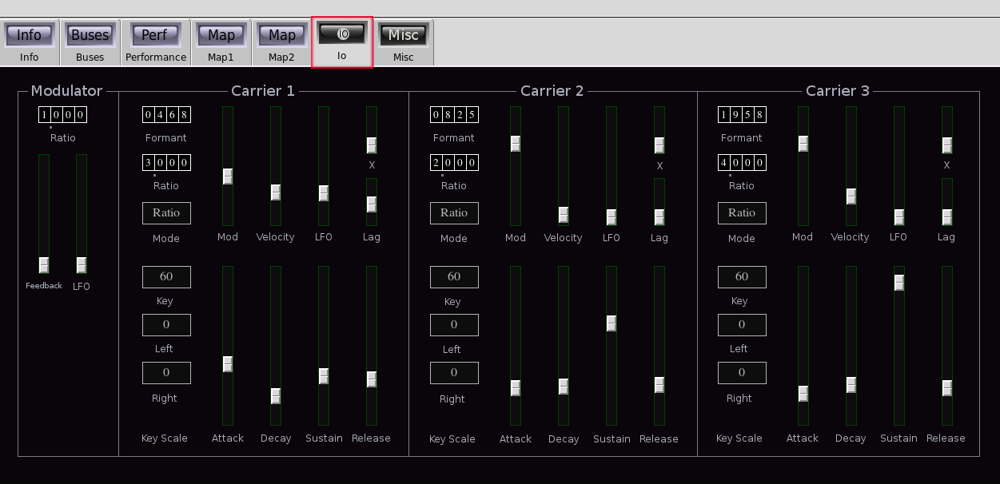
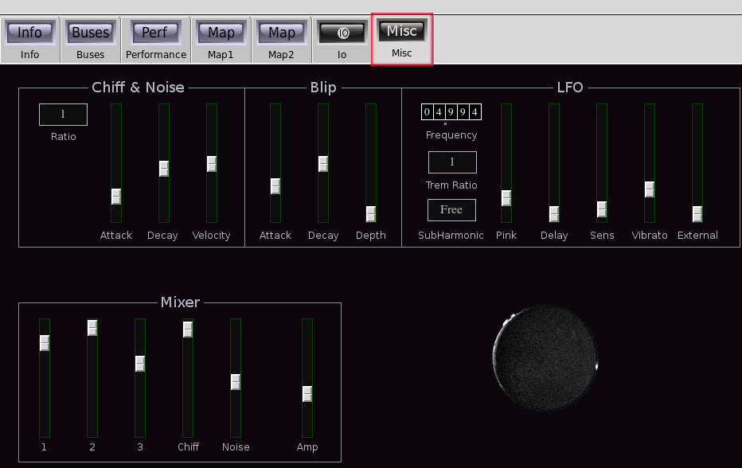

Io

| Home | Contents | Synth Catalog | Previous: FM2 | Next: Klstr |
Io is an experimental attempt at producing wind instrument like sounds using FM formants. The topography is a single modulator feeding three carriers. The carriers may be individuality switched between "normal" FM mode and Formant mode. In formant mode the carrier frequency is the harmonic of the fundamental which is closest to the formant frequency. A semi-tuned noise source, "chiff" generator, "blip" envelope, and vibrato round out the sound.
Modulator:
- Ratio tumbler - modulator frequency.
- Feedback slider.
- LFO slider, LFO application to modulation depth.
The three carriers have identical controls:
- Formant tumbler - fixed formant frequency, only used in formant mode.
- Ratio tumbler - relative frequency, only used in ratio mode.
- Mode button - Select between formant and ratio modes.
- Mod slider - modulation depth.
- Velocity slider, carrier velocity sensitivity.
- LFO slider, carrier LFO sensitivity (tremolo depth).
- X slider - external signal to carrier amp.
- Lag slider - lag time applied to modulator envelope.
- Attack time.
- Decay time.
- Sustain level.
- Release time.
- Key scale key - reference key for key scale.
- Left - left key scale depth in db/octave.
- Right - right key scale depth in db/octave.
Misc tab contains noise,Blip envelope,LFO and mixer controls.
The semi-tuned noise source is used for both background noise and initial chiff sound.
- Ratio tumbler, noise frequency ratio relative to fundamental.
- attack, chiff onset attack time.
- decay, chiff decay time.
- velocity, velocity to chiff amplitude sensitivity.
- attack
- decay
- depth
- Frequency tumbler
- Trem ratio button, Sets frequency ratio of LFO used for tremolo.
- SubHarmonic button, forces LFO frequency to be the subharmonic of the fundamental which is closest to the set frequency.
- Pink, adds noise to LFO signal.
- Delay, vibrato onset delay.
- Sens, vibrato sensitivity.
- Vibrato, vibrato depth.
- External, external control to pitch depth.
Buses:
- outbus - audio output.
- xbus - control input.
Parameters:
- amp - output amplitude (0.0 ... 2.0)
- vfreq - LFO frequency (0.0 ... 99.999)
- vlock - LFO frequency tracks fundamental (0 = no, 1=yes)
- vnoise - LFO noise amount (0.0 ... 1.0)
- vdelay - vibrato onset delay (0.0 ... 1.0)
- vsens - vibrato sensitivity (0.0 ... 1.0)
- vdepth - programmed vibrato depth (0.0 ... 1.0)
- vibrato - manual vibrato depth (0.0 ... 1.0)
- xPitch - external control to pitch (0.0 ... 1.0)
- tremRatio - tremolo frequency ratio *see below
- noiseRatio - noise frequency ratio (1,2,3,4)
- chiffAttack - chiff attack time (0.0 ... 1.0)
- chiffDecay - chiff decay time (0.0 ... 1.0)
- chiffAmp - chiff amplitude (0.0 ... 1.0)
- chiffVelocity - chiff velocity sensitivity (0.0 ... 1.0)
- noiseAmp - noise amplitude (0.0 ... 1.0)
- blipAttack - blip envelope attack time (0.0 ... 1.0)
- blipDecay - blip envelope decay time (0.0 ... 1.0)
- blipDepth - blip envelope pitch bend depth (0.0 ... 1.0)
- blipVelocity - blip depth velocity sensitivity (0.0 ... 1.0)
- op4Ratio - modulator ratio (0.000 ... 9.999)
- op4Feedback - modulator feedback (0.0 ... 1.0)
- op4LFO - LFO to modulator output (0.0 ... 1.0)
The envelope is applied to both carrier output and modulation input.
- op?Formant - carrier formant frequency in Hz, ignored if mode is 0, (0 ... 9999)
- op?Ratio - carrier frequency ratio, ignored if mode is 1, (0.000, 9.999)
- op?Mode - carrier mode (0 = ratio, 1 = formant)
- op?Velocity - carrier velocity sensitivity (0.0 ... 1.0)
- op?Tremolo - LFO to carrier amplitude (0.0 ... 1.0)
- op?ModDepth - Modulation depth (0.0 ... 1.0)
- op?Attack - Attack time (0.0 ... 8.0)
- op?Decay - Decay time (0.0 ... 8.0)
- op?Sustain - Sustain level (0.0 ... 1.0)
- op?Release - Release time (0.0 ... 1.0)
- op?ModLag - modulation envelope lag time (0.0 ... 1.0)
- op?BreakKey - keyscale reference key (0,6,12,...,114,120,126)
- op?LeftKeyScale - left keyscale depth in db/octave (-18,-15,-12,-9,-6,-3,0,+3,+6,+9,+12,+15,+18)
- op?RightKeyScale - right keyscale depth in db/octave (-18,-15,-12,-9,-6,-3,0,+3,+6,+9,+12,+15,+18)
- op?Amp - carrier amplitude (0.0 ... 1.0)
- op?X - external control to carrier amplitude (0.0 ... 1.0)
| Home | Contents | Synth Catalog | Previous: FM2 | Next: Klstr |